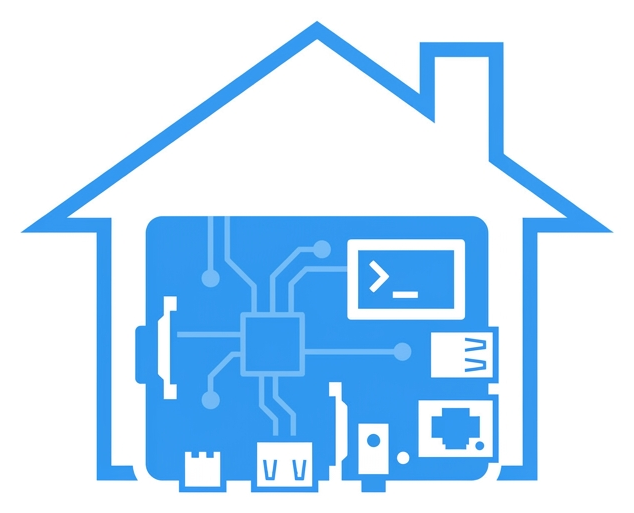

Home lab and Raspberry Pi workflows for Cursor, Claude Code, and MCP-compatible editors - 22 skills, 11 rules, and 50 MCP tools for managing Docker Compose stacks, monitoring, DNS, reverse proxy, networking, backups, disaster recovery, security auditing, logs, notifications, OS management, certificates, multi-node, diagnostics, and system administration on a Raspberry Pi home lab via SSH.
homelab_alertListhomelab_prometheusQueryhomelab_ntfySendhomelab_inventorySynchomelab_nodeListhomelab_nodeExechomelab_backupStatushomelab_backupRunhomelab_backupListhomelab_backupDiffhomelab_certCheckhomelab_certRenewhomelab_certListhomelab_npmCertshomelab_backupListhomelab_backupRestorehomelab_backupDiffhomelab_volumeBackuphomelab_backupStatushomelab_backupRunhomelab_adguardStatshomelab_adguardFiltershomelab_adguardQueryLoghomelab_composeUphomelab_composeDownhomelab_composePullhomelab_composePshomelab_grafanaSnapshothomelab_prometheusQueryhomelab_journalLogshomelab_logSearchhomelab_serviceLogshomelab_nodeListhomelab_nodeExechomelab_nodeStatushomelab_inventorySynchomelab_networkInfohomelab_adguardStatshomelab_npmProxyHostshomelab_openPortshomelab_ntfySendhomelab_ntfyTopicshomelab_alertListhomelab_aptUpdatehomelab_aptUpgradablehomelab_aptHistoryhomelab_kernelInfohomelab_systemdServiceshomelab_kernelInfohomelab_piStatushomelab_systemdServiceshomelab_piStatushomelab_piReboothomelab_diskUsagehomelab_npmProxyHostshomelab_npmCertshomelab_certCheckhomelab_containerScanhomelab_ufwStatushomelab_fail2banStatushomelab_openPortshomelab_ufwStatushomelab_fail2banStatushomelab_openPortshomelab_containerScanhomelab_serviceHealthhomelab_serviceLogshomelab_serviceRestarthomelab_prometheusQueryhomelab_uptimeKumaStatushomelab_sshTesthomelab_diskUsagehomelab_volumeBackuphomelab_serviceLogshomelab_serviceHealthhomelab_piStatushomelab_journalLogshomelab_logSearchhomelab_healthCheckhomelab_diagnostics| Name | Scope | Description |
|---|---|---|
| Ansible Best Practices | Flag Ansible antipatterns including non-FQCN modules, missing tags, and shell commands when modules exist. | |
| Backup Coverage | Flag Docker Compose services with persistent data that lack backup coverage. | |
| Compose Arm64 | Flag Docker Compose issues specific to arm64 Raspberry Pi deployments including incompatible images and missing healthchecks. | |
| Exposed Ports | Flag Docker Compose services with exposed host ports that should use a reverse proxy instead. | |
| Homelab Secrets | Flag hardcoded credentials, IP addresses, SSH keys, and secrets in home lab code and configuration files. | |
| Inventory Consistency | Flag inconsistencies between node registry and inventory or configuration files. | |
| Privileged Containers | Flag Docker Compose services running with elevated privileges or missing security restrictions. | |
| Resource Limits | Flag Docker Compose services without memory or CPU limits set. | |
| Ssh Safety | Flag dangerous SSH commands that could cause data loss or system damage on the Raspberry Pi. | |
| Weak Credentials | Flag default, weak, or improperly stored credentials in Docker Compose files and environment configs. | |
| Yaml Conventions | Enforce YAML formatting conventions for consistency across compose files, Ansible playbooks, and monitoring configs. |
| Name | Description |
|---|---|
| homelab_adguardStats | AdGuard Home DNS statistics and query counts |
| homelab_adguardFilters | List AdGuard Home filter lists |
| homelab_adguardQueryLog | Search the AdGuard Home DNS query log |
| Name | Description |
|---|---|
| homelab_backupStatus | Check latest restic backup snapshots |
| homelab_backupRun | Trigger a restic backup |
| homelab_backupList | List all restic backup snapshots |
| homelab_backupRestore | Restore files from a restic backup snapshot |
| homelab_backupDiff | Show difference between two backup snapshots |
| homelab_volumeBackup | Back up a Docker volume to restic |
| Name | Description |
|---|---|
| homelab_sshTest | Test SSH connectivity to the Raspberry Pi |
| homelab_healthCheck | Comprehensive self-test: SSH, Docker, required tools |
| homelab_diagnostics | Collect debug info: OS, kernel, Docker, memory, disk, network |
| Name | Description |
|---|---|
| homelab_composeUp | Start Docker Compose stacks |
| homelab_composeDown | Stop Docker Compose stacks |
| homelab_composePull | Pull latest Docker images for compose stacks |
| homelab_composePs | List running Docker Compose containers |
| homelab_serviceHealth | Check Docker container health status |
| homelab_serviceLogs | Tail recent logs from a Docker container |
| homelab_serviceRestart | Restart a Docker container |
| homelab_containerScan | Scan running container images for vulnerabilities using Trivy |
| homelab_logSearch | Search across Docker container logs with grep patterns |
| homelab_journalLogs | Query systemd journal logs with filters |
| Name | Description |
|---|---|
| homelab_inventorySync | Discover nodes from Ansible inventory or Tailscale network |
| homelab_nodeList | List all managed nodes and their connection status |
| homelab_nodeStatus | Get system status for a specific node |
| homelab_nodeExec | Execute a shell command on a specific node |
| Name | Description |
|---|---|
| homelab_prometheusQuery | Run a PromQL query against Prometheus |
| homelab_grafanaSnapshot | Export a Grafana dashboard configuration |
| homelab_uptimeKumaStatus | Get status of all Uptime Kuma monitors |
| homelab_alertList | List alerts from Alertmanager |
| homelab_speedtestResults | Get recent speedtest results |
| Name | Description |
|---|---|
| homelab_ntfySend | Send a push notification via Ntfy |
| homelab_ntfyTopics | List Ntfy topics and recent messages |
| Name | Description |
|---|---|
| homelab_piStatus | Raspberry Pi status: CPU temp, memory, disk, uptime, throttle state |
| homelab_piReboot | Safely reboot the Raspberry Pi |
| Name | Description |
|---|---|
| homelab_diskUsage | Get detailed disk usage breakdown |
| homelab_kernelInfo | Kernel version, boot parameters, loaded modules |
| homelab_systemdServices | List systemd units or get status of a specific unit |
| homelab_aptUpdate | Run apt update and list upgradable packages |
| homelab_aptUpgradable | List upgradable packages with versions |
| homelab_aptHistory | Show recent apt install, upgrade, and remove history |
| homelab_networkInfo | IP addresses, interfaces, DNS, and Tailscale status |
| homelab_openPorts | Scan for listening TCP ports and map to processes |
| homelab_ufwStatus | List UFW firewall rules and status |
| homelab_fail2banStatus | List fail2ban jails, banned IPs, and ban counts |
| Name | Description |
|---|---|
| homelab_certCheck | Check SSL certificate expiry, issuer, and fingerprint |
| homelab_certRenew | Trigger Let's Encrypt certificate renewal |
| homelab_certList | List managed SSL certificates from certbot and NPM |
| homelab_npmCerts | List Nginx Proxy Manager SSL certificates |
| homelab_npmProxyHosts | List Nginx Proxy Manager proxy host configs |
cd mcp-server && npm install